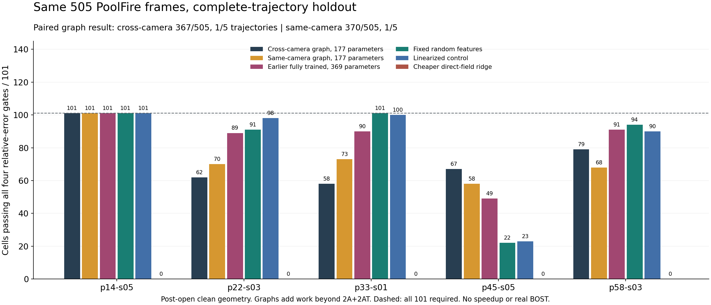
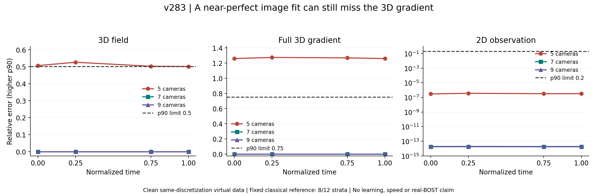
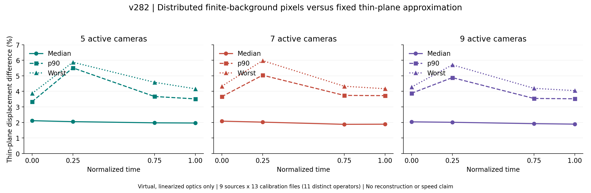
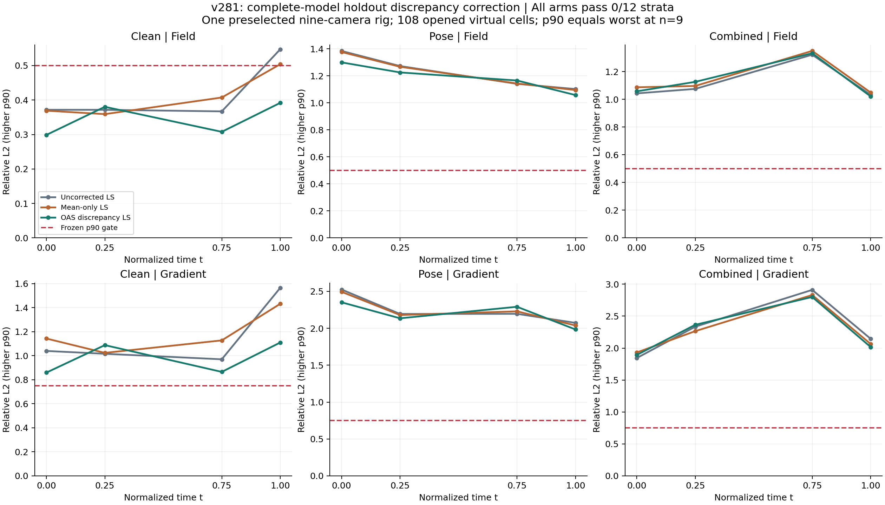
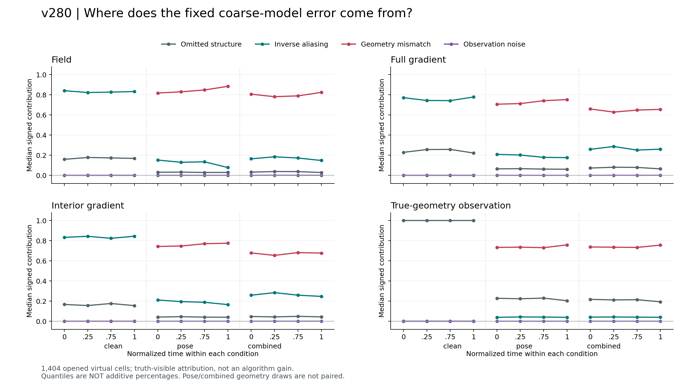

优化量
同精度前提下减少完整 A/A^T；随后再实测 fresh-process wall time 与 whole-pipeline peak RSS。
我研究的不是用神经网络替代物理，而是让一个只读取多视角观测与已知几何的低成本初始化器，为 CGLS / PCGLS 提供更好的三维起点。在最终场、完整梯度、内部梯度和观测误差都不劣于标准重建时，再判断它是否真正减少昂贵的 A/A^T 调用、端到端时间与峰值内存。
algorithm_breakthrough；固定路线已关闭最新配对实验：跨相机图消息367/505帧、1/5完整轨迹，同相机对照370/505、1/5；未显示稳定优势。此前369参数模型420/505、1/5，随机特征409/505、2/5，线性对照412/505、1/5。各固定方案均未通过完整门。
此前隐层与读出共369参数全部训练，另有每折一个仅由训练集确定的输出尺度；输入仍只有观测与几何。候选在线2A+2AT，更便宜的直接场ridge为2A+1AT；仍无稳定调用减少、资源优势或真实BOST结论。

机制诊断：线性化模型的全局消息对初始场范数的贡献最高约0.025%。删掉后505帧的整体判定不变，但微小指标有好有坏，严格“删除无损”仍失败。
完整序列经典基线通过：普通CGLS与几何Jacobi PCGLS固定512步，两种独立实现均为505/505帧、5/5条已打开轨迹通过四指标1%门。主基线最坏密度/内部梯度误差约0.660%/0.979%。每次求解512A+512AT；步数来自五点试点，不是最小调用数、学习加速或外部泛化。
方向诊断：K4到合格参考的修正，在全部505帧上平均法向算子灵敏度更低。沿实际观测残差梯度，任何单个标量步长的场误差下界都至少29.57%，不能一步达到1%目标；这不排除后续多步CGLS或多方向暖启动，尚无学习加速结论。
经典对照进展：局部稀疏近似逆配合固定256步，在五个已打开哨兵的四项误差上均优于同预算Jacobi；全部1%门通过3/5，对照为0/5。两个失败点的内部梯度误差约1.111%与1.186%。当前配置封存，不加深或调参；不是完整序列、学习加速或真实BOST成果。
新一轮学习验证：81参数三维状态小算子完成10个完整轨迹外折拟合，505个预测先封存。七种同预算方法在五个预定中点均为0/5通过；候选内部梯度误差2.12%至3.02%，高于1%门，且普通CGLS、BP与旧dual-ridge的四项误差都更低。每次部署258A+258AT，另计几何准备与映射；已关闭该配置并跳过余下500帧重建。不是完整序列通过、学习加速或真实BOST成果。
补齐关键经典对照：固定九相机几何的缓存直接分解，经独立QR复算，在505帧、5条完整轨迹上四项1%精度门全部通过。每种方法三次新进程测量，直接分解/CGLS512/Jacobi-PCGLS512的505帧总耗时中位数为2.80/166.85/168.86秒，进程峰值内存中位数为1.21/0.72/0.73GiB。包含重新分解、求解和写盘；不包含原始BOS矩阵构建与观测生成。该结果是经典方法对照，不是学习算法加速或真实BOST成果。
适用边界已确认：同一固定几何加入1%合成观测噪声，三个固定种子共1515个样本，直接解为0/1515、完整轨迹0/5。场/全梯度/内部梯度误差p90为5.59%/6.19%/10.10%，都超过1%门；观测残差却全部通过。Zero、BP和两种512步迭代对照在15个固定中点也均未通过。干净数据的快速结果仍有效，但不能当作噪声下的准确重建；这不是实验噪声或学习成果。
四参数去噪已完成独立复算：五折完整轨迹留出先封存1515个预测，再检验15个固定中点，最终0/15通过。相比同样15个样本的直接逆，场/全梯度/内部梯度p90从6.14%/6.22%/10.82%降到5.67%/5.80%/10.13%，但仍远超1%门，观测残差也升至1.14%。学习阈值优于不训练的通用阈值，但不足以解决噪声恢复；已跳过剩余1500次重建验证，关闭这个固定配置。不是完整重建、加速或真实BOST成功。
局部统计先验仍未过关：用其他完整轨迹学习邻近密度相关性，配合几何噪声协方差与一步CGLS，15个固定中点仍为0/15。场/全梯度/内部梯度误差p90为5.10%/5.41%/9.08%，较单体素控制改善，但远超1%门。独立误差分解显示，残留输入误差较大，先验本身也会改动真实结构；这不支持简单加强去噪或增加迭代。已关闭这个固定配置，跳过剩余1500次重建验证；不是完整重建、加速或真实BOST成功。
观测门审计发现一个小但真实的问题：加入1%合成噪声后，旧观测门会拒绝308/1515个真实三维场输入。噪声按干净观测归一化，评分却除以带噪观测；最大超门仅0.000141个百分点，解释不了已有5%至10%的场与梯度误差。同一15个中点的旧候选，即使按已知噪声预算诊断，联合通过仍均为0/15。独立复算确认，这是评价口径问题，不是算法成功；旧失败不翻案，后续新试验才可另冻噪声一致的指标。
实际CFD配对审计：505个已打开的处理后三维场共127,260对，在1%有界观测噪声下没有相互重叠，最接近的一对也需约8.93%噪声才相交。只看观测幅值则有11,468对发生歧义，完整投影结构包含额外信息。但505/505个场的最近邻都来自自身轨迹，有限样本可区分不等于未见轨迹可重建。独立复算已确认；这是对失败原因的约束，不是学习、重建或真实BOST成功。
五/七相机完整序列参考通过：固定两个相机子集各505/505帧满足场、全梯度、内部梯度与投影的1%门，合计1010/1010、10/10完整轨迹分组；同观测一步CGLS各0/505。Cholesky与独立QR及物理重放一致。每个子集需另建几何因子，在线1A+1A^T及两次三角求解，不等于免费或速度优势。仅限这两个无噪声子集，未验证任意增删、12相机、噪声或新工况；不是学习算法突破。
小学习器的实测负结果：64参数模型完成五折整轨迹留一训练，2525个外折预测在评分前封存；随后25个必要检验点只通过5个，这5个九相机点不用学习也能通过。删相机后的20个点全部失败，44参数线性对照也仅5/25，合格直接因子为25/25。按预定规则停止其余2500个细化，不称完整序列失败或成功；关闭这条单因子迁移学习机制，不追加模型或训练轮数。独立物理复算通过，但学习优势、速度收益和论文突破均未成立。
已定位上一学习器的表示缺口：只审计同样25个必要点。即便让每项指标分别选择最理想的系数，并把原四方向加一次CGLS的所有可能输出放进一个更宽松的九列空间，删相机的20/20点仍有不可消除的超门误差；四组场误差下界p90约58%–63%，远高于1%。原学习器输出的空间包含检查及独立SVD/QR复算通过。这不是新算法或完整序列结果，也不是整个逆问题不可能；它说明继续训练同一套方向表示无法补上当前缺口。
49参数学习实验已独立确认失败：使用完整九相机几何逆算子提供全局信息，再学习共享局部响应，仍只通过25个必要点中的5个九相机点；这5个不学习也能通过。其余20/20删相机点失败，四组场误差p90为87.7%–90.8%，目标为1%。15参数线性对照同样未通过。已封存2525个外折预测，但其余2500次物理修正按规则不再运行。关闭该固定配置；不是完整序列验证、学习优势、提速或真实BOST成果。
经典求解诊断通过：五条已开封轨迹各取一个中间帧，LSMR与独立LSQR均通过四指标1%门。LSMR密度相对误差约1.1e-6，原K4约0.41–0.48；这些干净样本中，K4早停留下了可恢复信号。但LSMR用了1945–2122次迭代，这不是学习、同价加速或5条完整轨迹成功。
新增配对小模型已独立重放：177参数跨相机图消息通过367/505帧、1/5完整轨迹；同参数、同预算的便宜同相机对照为370/505、1/5。跨相机方案仅154/505帧四指标均不差于配对对照，未显示稳定优势；关闭这个固定方案，不追加训练。两者在线2A+2AT之外均有一次图运算，不是免费消息或实测加速。
固定20轮全训练已独立重放：逐轨迹通过101/89/90/49/91帧，仅504/505帧在四指标上均不差于便宜ridge，未通过全部505帧门。第二实现共享封存权重，独立推理与物理重放，不是独立重训。关闭这个固定预算实例，不追加轮数、改种子或扩大模型追通过。
固定隐层的独立审计：精确优化读出仅能再消除1.9%-4.3%的训练目标损失；505帧留出初始化教师损失均以现有方向外的部分为主，逐轨迹中位占比81.6%-88.2%。学到的隐层改善464/505帧的表示下界，但不等于最终K1重建成功，也不证明整个网络已经收敛；没有替换模型或追加训练。
追加25帧物理诊断：跨相机方向可消除部分教师表示损失，但只在10/25帧不弱于普通normal方向，未通过预设对照门。两者都需要精确算子计算；这不是新预测器、最终场误差改善或加速结果。
精确normal缓存核验：九相机下需要64,746,812个非零项，约741 MiB；单次乘法算术项数为直接A/AT分解的10.93倍，未通过便宜控制筛选。这不是实测耗时、重建或学习结果。
完整采样的固定 TSVD 参考通过 8/12 分层：七、九相机全部通过，五相机四个时刻全部失败。五相机投影相对误差低于 5.2e-7，但全梯度 p90 仍为 1.258–1.273，高于 0.75 门。
独立复算有效，固定参考方法整体失败。1,404 个单元使用同一离散模型生成和反演干净虚拟数据；不是实测 BOST、跨模型学习或加速。十三份标定仅有十一种不同几何，不能视为十三个独立实验。

关闭此固定截断参考，不调阈值、截断或迭代深度追通过。下一步先用事先选定的小诊断解释五相机的场与梯度歧义，再判断是否值得扩大；完整研究目标不缩减。
九个现有三维场、四个时刻与十三份相机标定生成 468 组虚拟位移图，五、七、九相机子集共 1,404 个诊断单元。固定薄层近似的位移差异中位数约 1.9%–2.1%，最坏约 6.0%。
通过的是线性化光学接口与精确离散伴随，不是重建或加速。背景、折射率尺度和边界支撑均为明确虚拟设定；每相机仅用 8×8 射线。十三份文件只对应十一种不同像素算子，不能当作十三个独立实验。

下一步先冻结新像素接口下的合格重建参考与可识别性检查，再决定最小预测器；不沿用旧梯度积分的精度结果。v281 固定补偿仍关闭，不训练大模型，不租 GPU。
九个完整模型轮流留出，在一套预选九相机几何上得到 108 个虚拟单元。协方差补偿、不补偿和只减均值均为 0/12 分层通过。部分场误差下降，但梯度尾部仍失败。
训练统计只用其他八个模型；全部预测先封存，再计算留出误差。这是已开封数据的经典对照，不是外部泛化或真实 BOST。关闭这套固定补偿，算法突破与提速仍未成立。

停止调协方差、迭代深度或网络；下一步先审视有限背景像素观测与合格参考的物理接口。只能在明确合成光学假设和独立审计下继续，不能把模拟当成实测。
1,404 个已开封虚拟单元完成独立误差分解。clean 场误差中逆放大项的有符号贡献中位数为 82.27%–84.10%；pose 中几何项为 81.79%–88.41%。这是归因，不是重建改善。
只用现有三维场生成受控代理；归因读取真值，没有训练或部署提速。分量分位数不能相加；v279 仍不确定。algorithm_breakthrough=false、real_bost=false。

先比较模型误差处理与已关闭先验路线的数学区别，再冻结一个观测/几何可用且按完整模型留出的经典对照；同时保留有限背景像素 forward 的独立物理审计，不修改旧门或扩大网络。
背景纹影从多视角位移反推三维折射率或密度场，是病态且计算昂贵的逆问题。C 路线把学习模块严格限制为 warm initializer，后端仍使用显式物理算子和未修改迭代器，因此可以分别核查精度、调用成本、真实资源消耗和失效边界。
32×16×16 粗网格场同精度前提下减少完整 A/A^T；随后再实测 fresh-process wall time 与 whole-pipeline peak RSS。
逐单元检查 field、full-gradient、interior-gradient、observation 相对 Zero-K2 / Zero-K4 的八个门。
1,404 个已开封虚拟单元完成独立误差分解。clean 场误差中逆放大项的有符号贡献中位数为 82.27%–84.10%；pose 中几何项为 81.79%–88.41%。这是归因，不是重建改善。 只用现有三维场生成受控代理；归因读取真值，没有训练或部署提速。分量分位数不能相加；v279 仍不确定。algorithm_breakthrough=false、real_bost=false。
正结果说明哪一段机制值得保留，负结果说明下一步不能继续把算力花在哪里。
九个三维场与十三套标定生成 2,340 个受控虚拟 BOS 单元；独立复算 21/21。K16 reference 在 clean、观测噪声和内参条件通过 12/12，在位姿和组合扰动下 0/8。
reference-first 审裁先停止，因此候选与便宜 control 只作诊断。旧数据已使用，但没有配对实测二维位移，仍不是独立真实 BOST。
阅读 v278.1 双语结果 · 打开扰动门图全尺寸合成审计让两套实现的场相对差达到约 1.03e-15；唯一正式执行随后使用 10 个 CPU worker threads。至少一套冻结 rig 未满足预注册的等式重放有效性门。
程序在指标、通过数与 READY 前 fail-closed，独立科学 validator 未启动。固定 execution 关闭且不重跑；这是数值执行失效，不是 TV 的科学负结果。v275 仍是最近科学证据。
独立复算通过 26/31；transport、field、residual 与 metric 的连续数值差越过冻结容差。主候选与平流 K16 reference 的绝对门均只有 428/429 单元、12/13 rig。
候选 matched 仅 13/429 单元与 0/13 完整 rig。名义调用账不能解释为有效节省；固定整体平流机制关闭，不放宽容差、不调参，也不启动资源门或 GPU。
标签rig乱序差已为 0，物理replay差 3.33e-16；但相机乱序 1.96e-9 高于 1e-10，场/投影/残差跨实现差也超过冻结容差。独立检查 27/32。
429/429 与 13/13 仅作诊断，不能称科学通过。固定 LORO-K16 reference 关闭，不再数值修补、放宽门或调参。
13/13套 reported geometry 上验证 A=M D；正式与独立实现的有效性均为 16/16，Hodge等价误差 1.59e-12，相机乱序误差为0。
直接Hodge恢复严格等于 (D^T D)^-1 A^T r，没有新物理方向。该线性路线关闭；新增 0A+0A^T，不构成重建、算法或速度突破。
独立第二实现通过 14/14；13条线最大观测差 5.20e-16。independent端点向formal下降 13/13，formal端点在线段内部为 0/13。
判决为 MIXED_OR_NEAR_FLAT：不能声称共同欠收敛或结构性非唯一。固定Haar-IRLS继续关闭，新增 0A+0A^T，没有算法或速度突破。
formal 与 independent 各自通过 13/13 个绝对门；formal 有效性 18/18，独立验证却只有 24/31。
场差 6.05e-3、指标差 1.84e-3 均超过冻结 2e-5 门，所以 13/13 只能作诊断。固定 Haar-IRLS reference 关闭；不重跑、不放宽门，也没有算法或速度突破。
formal 通过 21/21 项，独立第二实现通过 32/32 项；K16 reference 只通过 12/13，唯一失败是 interior-gradient 0.758223 > 0.750000。
权威判决为 INCONCLUSIVE。normal-SGS K14 的绝对与 matched 0/13 只作诊断；不调顺序、松弛、载荷或深度，也没有速度或算法突破。
formal 通过 21/21 项，独立第二实现通过 28/29 项；唯一阻断是观测逐位相等要求，实际差为 5.20e-16。
绝对 13/13、K16-matched 0/13 仅作诊断，不能升级为正式负判决；13 个 matched 失败均只来自 observation。固定历史联合求解关闭，不重跑或放宽逐位门；这不是速度或算法突破。
候选通过绝对门 13/13，但 K16-matched 仅 7/13；六个失败全部只来自 observation。独立第二实现通过 25/25 项。
observation matched p90 / worst 为 1.08965 / 1.20955。同价 full-row 与更便宜 single-half control 都是 13/13，所以固定单步粗空间路线关闭；这是 post-open 首帧负机制证据，不是速度或算法突破。
不改候选、不开新算子调用，只对 229 个 observation 失败做精确残差分型。独立第二实现通过 18/18 项：119 个仅缺未选中补集，110 个两侧都缺。
逐 rig 的 12/13 个 p90 尾部与全部 13/13 worst 尾部都是双侧缺口。单纯溢出解释被否定，固定半射线路线继续关闭；这是 0A+0A^T 的 post-open 归因，不是新算法。
同一机制原样扩展到 13×33=429 个单元，完全独立第二实现通过 35/35 项。候选绝对门为 429/429、完整轨迹 13/13，但 K16-matched 只有 200/429、完整轨迹 0/13。
全部 229 个 matched 失败都只来自 observation，其 p90 / worst 比为 1.23503 / 1.85517。固定半射线路线关闭，不调相位、比例、深度、权重或 fallback，也不用更大模型或 GPU 挽救。
完全独立第二实现通过 32/32 项；保守双实现包络中，候选绝对门与 K16-matched 门均为 13/13，而 v258 与 K15 完整门仍为 0/13。四项 matched p90 比为 0.43560 / 0.45167 / 0.47261 / 0.96580。
候选射线等价账为 15.5A+14.5A^T，低于 K16 的 16A+16A^T。这只是在已打开 Case 19 首帧上的机制 headroom，下一步只授权不改参数的完整序列门，不构成 wall/RSS、外部泛化或真实 BOST 结果。
完全独立第二实现通过 19/19 项。九个候选里有五个绝对门为 13/13，但每个候选的 K16-matched 都是 0/13；逐 rig 真值选最好后，完整门仍是 0/13。
最佳联合负担 p50 / p90 / worst 为 1.06082 / 1.06693 / 1.06876，仍高于 1.0 门。关闭只围绕这九个旧候选的 selector 或更大模型挽救；新增 0A+0A^T，不构成速度结果。
独立 SVD 第二实现通过 24/24 项检查；观测、K14 预测和 K14 残差在冻结 1e-8 门下各自只有 0/117 个不变相机块。三类归一化缺陷的 p90 分别为 0.1275 / 0.1352 / 0.04956。
残差投影移除能量比例 p90 为 55.74%，所以它不是当前离散 forward 的精确物理不变量。该路线在候选重建前关闭；新增调用 0A+0A^T，不构成精度或速度结果。
独立第二实现通过 41/41 项检查。primary 以 15A+15A^T 只通过绝对门 3/13，K16-matched 为 0/13；四项 matched p90 比为 1.1716 / 1.1493 / 1.1183 / 1.3361，全部高于冻结 1.05 门。
同价 K15 绝对门为 9/13，便宜的 v258 为 13/13。当前分量块机制族关闭，不扩大块、不训练、不租 GPU。
独立第二实现通过 52/52 项检查。primary 以 15A+14A^T 通过绝对门 13/13，但 K16-matched 为 0/13；观测比值 p90 / worst 为 1.2281 / 1.3686，高于冻结 1.05 门。
同价未加权 v258 为 1.2264 / 1.3669，反而略好。v259 的相机局部归因只是症状定位，不是充分修复规则；当前权重机制族关闭，不扩完整序列、不训练、不租 GPU。
正式 eig 路径与独立 Gram + Cholesky 路径分别封存物理 replay，独立 47/47 项全真。primary 的 field / gradient / interior-gradient matched p90 比为 0.452 / 0.466 / 0.495，但 observation 为 1.226、worst 为 1.367，高于冻结 1.05 门。
正交补把等成本线性热 observation p90 从 3.222 降到 1.226，但仍不通过。当前路线关闭，不运行完整序列，不训练、不租 GPU，也不宣称有效调用减少。
K1 种子、geometry-whitened 95% 能量 support、一次六邻域膨胀、masked CGLS K11 correction 与未修改 full-field PCGLS K1 的唯一 primary 通过 23/24 项独立检查；唯一 normalized residual 差 3.08360e-8 为冻结界的 1.542×。
support mask 与 selected count 完全一致也不能覆盖连续门失败。正式与独立科学数组不可用于性能解释；名义 15.625% 调用差无效，当前机制关闭，不运行完整序列。
独立第二实现完成物理 replay，但只通过 26/29 项。混合系数、残差和逐单元指标差为 6.73e-9 / 7.51e-9 / 1.02e-8，分别高于冻结 1e-12 / 1e-10 / 1e-9 界。
离散 primary 的绝对与 K16-matched 计数虽均为 429/429 · 13/13，但只能作诊断，不能称算法 headroom。名义 8.8068% 调用差无效；当前信任混合关闭。
独立第二实现以 Gram 特征分解重建 formal SVD 结果，通过 29/29 项检查；场、指标与汇总最大差为 7.79e-10 / 3.88e-11 / 1.64e-11。
primary 绝对门为 383/429 · 6/13，K16-matched 为 0/429 · 0/13。495A+495A^T 相对 K16 的 6.25% 只是未过精度门的名义预算；当前全局 K1 子空间池化关闭。
formal 与 independent 的 medoid、Prim 顺序和父节点完全一致，边权最大差 5.55e-16；但 field、metric、residual 差分别为 1.20e-7 / 8.61e-8 / 8.17e-6，均越过冻结界。
事后离散诊断中，图遍历绝对门为 427/429 · 11/13，同价观测盲中点 control 为 429/429 · 13/13。该路线关闭但不升级为科学 FAIL；9.0909% 只是名义调用差。
首帧取 v250 线性热解、后 32 帧取 v244 因果暖 K14；逐分量最坏包络的 formal 与独立第二实现通过 17/17，最大诊断差 0，新增 0A+0A^T。
绝对门 429/429、完整 rig 13/13，但 K16-matched 只有 416/429 与 0/13；十三个失败全是首帧 observation。9.375% 只是名义调用差。
formal 通过 24/24 项，完全独立第二实现通过 38/38 项；最终场、指标、汇总、相机换序与调用账全部闭合。Charbonnier 主候选以 15A+14A^T 达到 13/13。
同价线性热扩散对照也达到 13/13，所以首帧平滑信号不能归因于非线性 conductance。按结果前规则不运行完整 429 单元序列，关闭 Charbonnier 特异路线；algorithm_breakthrough=false。
formal 完成 13 套 rig 的共同首帧并通过 22/22 项有效性检查；完全独立第二实现通过 33/35 项。Haar 系数相对差 1.82e-11 越过结果前冻结的 1e-12 界。
两套实现的离散计数一致：主候选 13/13，同价低频近似对照 0/13，原始 K14 7/13，K16 reference 12/13；这些只能作诊断。判决保持 INCONCLUSIVE，不放宽容差、不启动完整 429 单元序列。
阅读 v249 完整证据 · 打开 v249 验证边界图formal 完成 13 套 rig 的共同首帧并通过 21/21 项有效性检查；完全独立第二实现通过 26/28 项。观测数组最大非零差 1.33e-15 违反结果前冻结的逐位相同要求。
两套实现都诊断出固定 4×2×2 体素块主候选 0/13，而更便宜的对角 Jacobi 对照为 12/13。判决保持 INCONCLUSIVE，不放宽规则重跑；机制退出，完整 429 单元序列不运行。
阅读 v248 完整证据 · 打开 v248 验证边界图formal 完成 429 个单元并通过 21/21 项有效性检查；完全独立第二实现通过 25/27 项。线块、逆、场、指标和汇总均在各自冻结界内，但残差相对差 3.2449e-8 越过 1e-8 界。
离散标志一致不能替代浮点闭环。判决保持 INCONCLUSIVE，不重跑、不放宽容差；当前精确线 Schwarz 实现退出继续投入，但没有被证明数学上不可能。
阅读 v247 完整证据 · 打开 v247 验证边界图独立第二实现通过 16/16 项且与 formal 最大差为 0。K14→K16 的确定安全单元从 313/429 增至 417/429，新增 104、丢失 0；全部 rig×指标的 p90 与 worst 尾部均未恶化。
十二个可能失败分量中有十一个具有正的最坏增益，唯一首帧内部梯度阻断项在 K14 与 K16 间不变。按结果前规则不运行 K20；固定深度 reference 加深路线关闭。
阅读 v246 完整证据 · 打开 v246 判决图独立第二实现通过 26/29 项；残差与指标复算超过冻结数值门。开封后诊断中，K16 reference 绝对门为 417/429 · 9/13，K14 warm 主候选为 428/429 · 12/13。
相对不充分 reference 的 13/13 matched 不能覆盖绝对门和独立复算失败。固定确认路线关闭，不重跑、不放宽容差、不启动 wall/RSS。
阅读 v244.2 完整证据 · 打开 v244.2 判决图因果 FIFO16 warm state 加实际 geometry-Jacobi PCGLS K14 达到 546/546 个绝对安全与 K16 同精度单元、13/13 条完整 rig；四个同价或更便宜 controls 的同精度完整 rig 都是 0/13。独立复算 39/39 项通过，正式/独立及原始/反转相机顺序在规范化后逐值一致。
631A+590A^T 对 K16 的 672A+672A^T 名义少 9.1518%，但这仍是已开封 Case 7 的 post-open 机制证据；外部、wall/RSS 与真实 BOST 门尚未通过。
K14 是相对 K16 仍同时严格节省 A 与 A^T 的最大当前深度。逐指标 truth-aware 容量达到 533/533 后续帧和 13/13 完整 rig；v241.1 不重放物理、不写新科学数组，封存数组再裁决 35/35 项通过。
每条 rig 以首帧 K16 建立观测空间正交 FIFO16，后续每帧投影进 cache、运行一次未修改 PCGLS，并追加当前 K1 方向。动态候选的绝对安全单元为 148/546，明显高于同调用账 controls 的 14/546、13/546 与 0/546；但 K16 同精度仍只有 13/546，全是首帧锚点，后续 0/533、完整 rig 0/13。v237.2 独立封存数组再裁决 26/26 项通过。
FAIL_CASE7_CAUSAL_KRYLOV_RECYCLING_V237
每个 fold 用其他 12 条 rig 的 504×8192 Jacobi 对称坐标尾差建立 rank 64 子空间，再映回留出 rig。结果仍为 0/13；p90/worst 为 0.734855/0.813573，比物理场全局 rank 64 的 0.731692/0.805609 略差，后期 p90 在 13/13 条 rig 上恶化。独立 direct-SVD 复算 18/18 项通过。
FAIL_CASE7_JACOBI_CANONICAL_TAIL_SUBSPACE_CAPACITY_V239
三维场固定切成八块，每块 rank 8；总维数与 v236 全局控制同为 64。八分块 p90/worst 为 0.751069/0.833760，比全局 rank 64 的 0.731692/0.805609 更差，完整 rig 仍为 0/13。独立 direct-SVD 重算全部 8×13 个块，12/12 检查通过。
FAIL_CASE7_OCTANT_TAIL_SUBSPACE_CAPACITY_V238
每个 fold 用其余 12×42=504 个三维尾差构造空间。rank 64 的全局 p90/worst 为 0.731692/0.805609，高于 0.316228/0.500000 门；独立 direct-SVD 复算最大差 6.66e-15。
FAIL_CASE7_LORO_TAIL_SUBSPACE_CAPACITY_V236
正式完成 546/546，独立第二实现重算全部单元。结果前冻结的纯几何数值勘误确认 Jacobi 最大相对差仅 2.18e-16。Direct K11 绝对门为 546/546、13/13，但相对 K16 匹配门只有 330/546、0/13。
FAIL_CASE7_LOW64_K11_PROSPECTIVE_CONFIRMATION_V235
独立 14/14 检查通过。Direct K11 为 598/598、13/13，Zero K16 为 594/598、11/13，dual-PRESS 策略为 595/598、11/13。被拒绝的 161 个 direct 单元原本全部安全；fallback 制造全部 3 个策略失败。
POST_OPEN_CASE12_DIRECT_LOW64_K11_CONTRACT_DOMINATES_FIXED_DUAL_PRESS_FALLBACK_V234
正式与独立实现的场差仅 1.25e-13，17/17 数值检查通过。observation p90 为 0.13396，低于 0.20 门；但 field/full-gradient/interior-gradient p90 为 0.82018/1.23154/0.77916，严格安全单元 0/598、完整 rig 0/13。
FAIL_INADEQUATE_CASE12_ABSOLUTE_SPECTRAL_REFERENCE_V233
结果盲审裁的 18/18 个数值检查与 7/7 个科学释放检查全部通过；场、标量观测误差、分数和决策一致。冻结 K16 只达到 594/598 个严格单元、11/13 个完整 rig，四个失败都只越过内部梯度门。
INCONCLUSIVE_INADEQUATE_CASE12_K16_REFERENCE_V230
Case 5 每个目标 rig 只由其他 12 个 rig 校准，接受 136/546 个安全单元、最差 rig 5/42；Case 2 不进入校准，接受 318/715 个安全单元。两边危险误接均为 0、完整 rig 均为 13/13，独立 17/17 检查通过。公式在 v228 后选定，因此仍只称 post-open development headroom。
POST_OPEN_FOLD_LOCAL_DUAL_PRESS_CALIBRATION_HEADROOM_V229
Case 5 从原始 126、白化 123 提高到固定 OR 的 140/546，最差 rig 从各自 4/42 提高到 5/42；Case 2 为 324/715 安全接受，危险误接始终为 0。两边 13/13 完整 rig 精度通过，独立 17/17 检查通过。由于父失败位置已经可见，只称 post-open 互补机制线索。
POST_OPEN_COMPLEMENTARY_DUAL_PRESS_SIGNAL_V228
白化在 Case 2 保持危险误接为 0，并把安全接受从 297 提到 323；两种工况仍均为 13/13 完整 rig 通过。但 Case 5 最差 rig 仍为 4/42，失败从 rig 11 移到 rig 4。独立 19/19 检查通过，说明白化有作用却未解决跨 rig 稳定性。
FAIL_LOW64_STUDENTIZED_BLOCK_PRESS_CERTIFICATE_V227
原始 PRESS 在 Case 2 接受 297/715 个单元且危险误接为 0；但 Case 5 最差留一 rig 只接受 4/42。该历史父分数已在 v227 中逐分数、阈值和决策精确复现。
FAIL_LOW64_BLOCK_PRESS_CERTIFICATE_V226
27 维几何耦合角谱主策略在 Case 5 接受 252/546，但最低 rig 接受率为 0%；在 Case 2 接受 523/715，其中 145 个不安全，完整精度为 0/13 rigs。便宜 control 同样接受 132 个不安全单元；独立 17/17 检查通过。
FAIL_LOW64_ANGULAR_SPECTRUM_MUTUAL_SUPPORT_V225
1261 个单元中有 1064 个安全、197 个不安全，九个删一相机 Low-64 系统均保持秩 64。主 Jackknife 分数的安全/不安全严格 margin 为 -0.053809，便宜最大视角残差 control 为 -0.170900；独立复算最大特征差 5.62e-15。两个标量都不能建立 fail-closed 阈值。
FAIL_LOW64_CAMERA_JACKKNIFE_RISK_OVERLAP_V224
1261 个单元中有 1064 个安全、197 个不安全。调和分数的安全/不安全区间严格 margin 为 -0.233392，拟合残差 control 为 -0.194502；独立复算最大特征差 1.25e-14。两个一维分数都不能建立 fail-closed 阈值。
FAIL_LOW64_HARMONIC_RISK_OVERLAP_V223
v222 因 1.439e-9 超过冻结 1e-9 门保持不可判定。事后代数归因独立 16/16 通过：Case 5 为 546/546 matched、13/13；Case 2 仍为 518/715、0/13。零空间成分解释关闭，归因指向 A^T A 谱重加权。
POST_OPEN_ROWSPACE_PRESERVES_CASE5_BUT_CASE2_HARM_REMAINS_V222_1
同价 12A+11A^T 候选在 Case 5 与 Case 2 都是 0 个 matched 单元、0/13 完整几何；合格 Zero-start K16 均为 13/13。独立 32/32 检查通过，正式/独立场差最高 3.03e-9。
FAIL_LOW64_EXACT_ROWSPACE_LIFT_V221
独立名义重放中，Case 5 为 546/546 单元、13/13 几何，Case 2 只有 629/715 单元、0/13 几何。正式/独立场差与换序场差分别为 1.509e-8 与 1.145e-8，均高于冻结 1e-8 容差。
INCONCLUSIVE_INVALID_OBSERVABLE_FALLBACK_V220_2
Potential-normal K14 为 0/546 matched 单元、0/13 几何；Low-64 K11 为 546/546、13/13，逻辑调用 12A+11A^T，相对 K16 的 16A+16A^T 总计减少 28.125%。
FAIL_POTENTIAL_NORMAL_PCGLS_WARM_INSUFFICIENT_V218_1
K9-K15 均不能同时通过绝对与 K16 matched 门。最接近的 K15 为 544/546 绝对单元、11/13 完整几何，却仍为 0/546 matched；K16 为 546/546、13/13。独立 14/14 检查全真。
PASS_K16_REMAINS_MINIMAL_ADEQUATE_GLOBAL_PCGLS_DEPTH_V217_1
Geometry-Jacobi PCGLS K16 在 546/546 单元、13/13 几何通过四项绝对门。Low-64 K8 也在 546/546 单元通过绝对门，但相对合格参考只有 0/546 matched；field、完整梯度与 observation 分别有 545、546、546 个单元越过 1.05。独立 18/18 检查全真。
FAIL_FIXED_LOW64_PROXY_WARM_START_AGAINST_ADEQUATE_PCGLS_REFERENCE_V216
13 套虚拟九相机几何与 42 帧共完成 546 个物理重放。Zero-K16 只在 466/546 单元、1/13 几何通过自身绝对门；80 个失败全部只来自内部梯度。独立第二实现复现全部物理场、指标、调用账和同一不可判定结论。
INCONCLUSIVE_INVALID_OBSERVATION_PROXY_WARM_REPLAY_V215
代理只读取合成二维观测、已知相机几何和几何响应 cache，不读取三维 CFD 真值。师兄标定族 min/median/max 为 0.19783/0.32483/0.59186，虚拟九相机为 0.98917/1.06574/1.11703，严格间隔 0.39730；独立 19/19 检查通过。
PASS_OBSERVATION_ONLY_SPECTRAL_ALIGNMENT_PROXY_STRICTLY_SEPARATES_CASE5_REFERENCE_V214
固定 low-64 子空间捕获每帧 77.69% 至 79.38% 的三维场能量。源加权调和可观测性让虚拟九相机最小值仍高于师兄标定族最大值，严格间隔 0.28668；源盲 control 保留两个重叠。独立 19/19 检查通过，但该指标读取已开封三维真值。
PASS_ACTUAL_SOURCE_ALIGNMENT_STRICTLY_SEPARATES_CASE5_REFERENCE_V213
结果前固定 64 个正弦模态、射线中点积分和相机等权聚合。虚拟九相机在 169 个跨族配对中只 7 次高于师兄标定族，162 次反向；主指标中位数为 0.62922 对 0.64597。因此关闭当前相消标量，但不扩大为所有有符号相位结构无关。
FAIL_SIGNED_LINE_CANCELLATION_DOES_NOT_EXPLAIN_CASE5_REFERENCE_V212
结果前固定的归一化局部下 10% 主指标在 169 个跨族配对中 0 次符合预期，169 次全部反向。师兄标定族/虚拟九相机中位数为 0.12501/0.07912。但虚拟九相机的逐体素局部下限中位数更高，因此只关闭这一固定下尾标量，不扩大为所有局部几何无关。
FAIL_LOCAL_RAY_COVERAGE_DOES_NOT_EXPLAIN_CASE5_REFERENCE_V211
1515/1515 精度兼容；exact 调用减半，fresh wall 中位下降 43.49%，三类 RSS p90 过门。仅限已开封 PoolFire 同族代理。
84/84 对 78/90；12 个失败全部暴露在内部梯度，说明全局 residual gate 看不见局部风险。
85/90 可行，五个单元的严格区间为空；增加一个阻尼系数无法修复局部梯度。
新增方向非退化但严格容量仍为 89/90，最后越线只减少 1.55%。由此停止堆全局径向阶数。
F12+ 没有复现 F30 的净伤害，停止围绕单帧扩建局部窗口。
九维线性预测存在信号，但候选集合不足；这一负结果直接触发 v96 的表示结构升级。
四个 residual/geometry-only 频谱方向修复旧九维 family 的最后缺口；三档几何全部 30/30，独立复算逐值一致。
条件容量门关闭四系数训练，要求旧九维与新四维联合适配。
mean 与 linear ridge 同为 75/90，RBF 为 71/90；270 次独立精确回放确认普通坐标回归未封口。
正式多轨迹评估覆盖 2970 个 candidate cells、990 个 control cells、270 个 predictions 和 90 个 input bundles；独立复算最大数值差为 0。
rank-4 的总 exact-call 预算低于候选，但五条轨迹 0/5；rank-32 更贵且同样 0/5。该结果保留为 v114 之前的历史父控制证据。
回看 v112.1 完整证据固定 64 维低模谱下限的中位数从师兄标定族的 0.02146 提高到虚拟九相机的 0.30756，中位条件数从 152.13 降到 11.65；但虚拟最小值仍低于师兄标定最大值，两个跨族配对反向。因此几何/条件性是主要因素，这一个指标却不是充分分类器。
PARTIAL_OVERLAPPING_GEOMETRY_ONLY_OBSERVABILITY_EVIDENCE_V210
同一 Case 5 三维场、网格和 Zero-CGLS K16 下，虚拟环形九相机控制与十二相机 primary 全部通过。九相机已经足够，因此改善归因于几何/覆盖，不归因于额外三台相机；v208 的失败不再能解释为 Case 5 数据、网格或 K16 本身不可重建。
PASS_SYNTHETIC_RING_GEOMETRY_NOT_CARDINALITY_RESCUES_CASE5_REFERENCE_V209
此前未打开的公开 Case 5 已开封。Zero-CGLS K16 的 gradient 和 observation p90 过门，但 field p90 为 0.725-0.761，高于 0.50；这个失败随后由 v209 的虚拟几何对照重新归因为相机几何/覆盖问题。
INCONCLUSIVE_CASE5_REFERENCE_REMAINS_INADEQUATE_AT_ZERO_CGLS_K16_V208
固定 TGV2 把 1313/1313 个单元的观测误差压得比 Huber 更低，但严格单元仍为 1289/1313、完整组仍为 5/13，失败集合 24/24 完全重合且救回数为 0。独立指标最大差 2.22e-16；当前瓶颈不是观测拟合不足。
FAIL_TGV2_PDHG_REFERENCE_ADEQUACY_V201
固定 Huber-TV PDHG 把 K2 的 1213/1313、0/13 提高到 1289/1313、5/13，但仍有 24 个单元和 8 个完整组失败。v201 继承这一失败集合并检验二阶机制。
FAIL_HUBER_PDHG_REFERENCE_ADEQUACY_V200
联合分块 Galerkin 加未修改 K1 后，五相机与九相机 field / gradient p90 均通过，observation p90 在 v182 基础上降至 0.226659 / 0.207224，但仍高于冻结 0.20 门；严格通过为 1/52 与 37/52。独立第二实现 46/46 检查通过。
FAIL_OBSERVATION_BLOCK_GALERKIN_V183
每套 reported geometry 单独构造 Jacobi 白化与 16 个谱校正后，K1 的五相机与九相机仍都是 0/52；16 个模态只把逆残差 p90 降低约 0.71%。v182 因此转向随当前观测变化的一步物理更新。
FAIL_GEOMETRY_CONDITIONED_RANK16_INVERSE_V181
最多 357 参数的 Gram-ridge 只读报告几何，严格安全 13/13、时间分层 4/4；两个便宜对照只有 2/13 与 0/13。v172 进一步排除了对已开封三维场与时间的简单适配解释。
PASS_RESULT_BLIND_GEOMETRY_SELECTOR_HEADROOM_V171
穷举 13×126 个子集、58,968 个候选 cell 后，标定共享真值见证通过 4/4；gradient p90 为 0.733335 / 0.744963 / 0.748953 / 0.730538。23 项独立检查全部通过。
PASS_GEOMETRY_ONLY_SHARED_FIVE_CAMERA_SUBSET_CAPACITY_V170
几何启发式只通过 8/12；四个五相机 gradient p90 全部失败。v170 进一步证明问题在选择目标，而不是所有五相机子集都没有容量。
FAIL_GEOMETRY_SELECTED_CAMERAS_V169
v168 通过 10/12；两个后期五相机梯度尾部比同预算 v167 更差。v169 转而检查相机名单是否是根因。
FAIL_OBSERVATION_LOCAL_DIVFREE_VORTEX_V168
v167 同样通过 10/12；t=0.75 五相机 gradient p90 / worst 为 0.813123 / 1.145759。v168 的无散旋涡没有改善这组值。
FAIL_OBSERVATION_LOCAL_CONTINUITY_FLOW_V167
v166 同样通过 10/12；t=0.75 五相机 gradient p90 / worst 为 0.795556 / 1.059791。v167 的局部扩展没有改善这组值。
FAIL_OBSERVATION_CONTINUITY_AFFINE_TRANSPORT_V166
v165 同样通过 10/12；t=0.75 五相机 gradient p90 / worst 为 0.801162 / 1.080751。v166 的质量守恒修正改善了这组值，但仍未通过完整门。
阅读 v165 父结果oracle 为 3700/3700、5/5；线性 ridge 为 3089/3700、0/5，RFF 正式/独立为 2137/2139 且均 0/5。浮点哈希子集导致 RFF 不可复现，因此当前 predictor family 关闭但不声称数学不可能。
INCONCLUSIVE_INDEPENDENT_RECOMPUTATION_GROUP_KRYLOV_PREDICTOR_V149
全局四系数 oracle 只通过 18/20 哨兵与 3/5 轨迹尾部；按相机/分量组使用四阶系数后达到 20/20 与 5/5。
HEADROOM_BLOCK_DETECTOR_KRYLOV4_V148
真值可见跨轨迹跨度通过 14/20 哨兵、1/5 轨迹尾部；同轨迹上限为 18/20、2/5。它关闭 K≤32 的样本近邻跨度，并直接触发 v148 的当前样本物理谱诊断。
FAIL_LOCAL_SPAN_CAPACITY_V147
local-only、local + moments 与 local + pose coupling 均只通过 1/20；同轨迹上界最好 9/20，五条轨迹尾部全部失败。独立数组最大差 8.88e-16。按合同不启动 3700 单元 Stage B。
FAIL_DIRECTION_CONDITIONED_IDENTIFIABILITY_V146
这个部署输入诊断不读取真值。五条轨迹、三套几何、六张坐标图和十个相邻帧对中，900/900 可辨识，但非零位移与超过数值容差的一致性改善均为 0；独立重算 shift 与改善最大差也为 0。
阅读 v116 完整证据从 2026-07-06 起，完整保留正式运行、独立复算、负结果、路线切换和证据边界。协议、下载、网页和测试数量只算工程保障，不算算法成果。
关键数字必须由第二条实现重建输入、指标、门和调用账；验证未通过时不进入主页结论。
v98 排除普通联合回归；v109 修复支撑混杂；v110 定位重复重采样误差。v111 采用坐标先复合与原始张量单次 gather 后，首次得到可独立复算的未见形变学习信号。
单工况容量、漂亮均值、调用数下降或页面完善，都不能单独写成算法突破与论文成功。
任何早期阶段失败都会准确记录并重排方法，不通过更大的网络掩盖表示或物理问题。
71.91%，两个 p58 同时含明显 geometry 与 state 贡献；判决 ROOT_CAUSE_MIXED_SUPPORT_GAP_V155，单纯几何或时间挽救均关闭。回看 v155 完整结果546/546 · 13/13；九相机已经完整救回 K16 reference，改善归因于几何/覆盖而非额外相机数量。167/169 个跨族配对中谱下限更高，但两族区间重叠；几何/条件性是主因，固定 64 维谱下限却不是充分分类器。0/169，反方向 169/169。关闭固定局部下尾标量，但保留 v210 全局低模态几何证据。169/169 严格分离，源盲 control 为 167/169。机制得到支持，但仍需 observation-only proxy 才能进入部署路径。高速反应流会产生连续帧和多视角数据。每帧少一次完整 forward / adjoint，收益会随实验批次持续累积。
学习模块只生成起点，最终解仍由显式成像模型和经典 Krylov 求解器精化，便于诊断误差来源。
Case 6 证明平均场变好不等于内部梯度安全。逐单元八门能直接暴露会损伤火焰局部结构的候选。
研究路线由最新负证据驱动，而不是由模型名、算力规模或已经投入的时间驱动。
在裁决 v278.1 候选前，先结果前冻结一个独立通过全部位姿与组合扰动分层的稳健 reference；不得针对已打开的八个失败分层调候选。真实 BOST 仍需配对实测二维双分量位移。
现在仍不租：当前固定迁移假设已被前瞻门否定，训练吞吐不是阻塞。只有物理上不同的机制先通过 matched-accuracy 与便宜对照，且 CPU 实测证明训练吞吐是主要瓶颈，才重新评估 GPU。
公开独立工况通过后，接入位移图、相机内外参、视角定义、重复测量噪声、现有重建接口和认可基线。
近期历史边界保留：v179 证明完整仿射坐标可观测；v184、v185、v186.1、v187.1 与 v188 逐级定位信息损失；v189 补回频谱信息；v190 排除固定 1280 列几何子集；v191.1 定位观测激活的正规度量失真；v192 验证自适应评分能部分改善，但固定预算仍不足。
历史状态保留：此前“当前判决：v111 出现独立复算的单轨迹学习信号，正式泛化门尚未开始”只描述 pilot；当前状态已更新为 Formal Stage A 15/15。
历史 pilot 入口保留：v111：未见双轴坐标变化上出现可独立复算的学习信号；原图文件 nine_view_diffeomorphic_ray_conditioned_warm_pilot_v111.png 仍可从历史资料中访问。
早期全课题组调研、19 个候选选题、604 篇论文入口、教材库、术语索引和旧实验链都完整保留，但不再占据毕业设计主页的主要篇幅。
{kind=link}
{kind=link}
{kind=link}
{kind=link}
{kind=link}
{kind=link}
{kind=link}
{kind=link}
{kind=link}
{kind=link}
{kind=link}
{kind=link}
{kind=link}
{kind=link}
{kind=link}
{kind=link}
{kind=link}
{kind=link}
{kind=link}
{kind=link}
{kind=link}
{kind=link}
{kind=link}
{kind=link}
{kind=link}
{kind=link}
{kind=link}
{kind=link}
{kind=link}
{kind=link}
{kind=link}
{kind=link}
{kind=link}
{kind=link}
{kind=link}
{kind=link}
{kind=link}
{kind=link}
{kind=link}
{kind=link}
{kind=link}
{kind=link}
{kind=link}